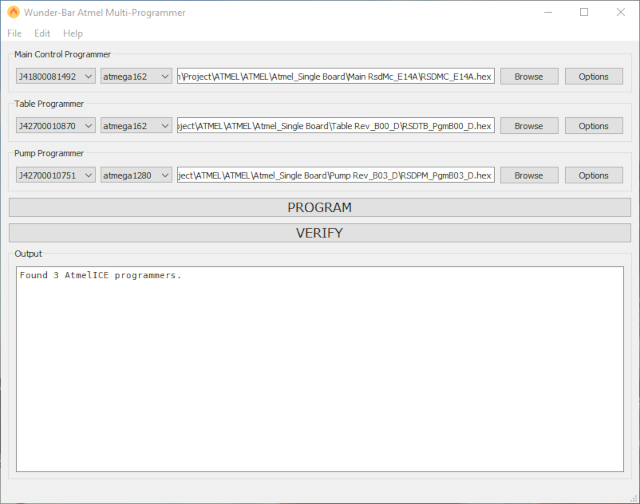

Wunderbar Multi-Programmer Help
This is the documentation for the Wunderbar Multi-Programmer tool which
is designed to program up-to 3 devices using the Atmel-ICE programmer.

Work Flow
Normal operation of this tool involves the following steps:
- Load the configuration from the .json file.
- Connect each of the programmers via JTAG to the device to be programmed.
- Hit the Program button to begin the programming.
- Wait for the programmers to complete programming and verification.
Chapters